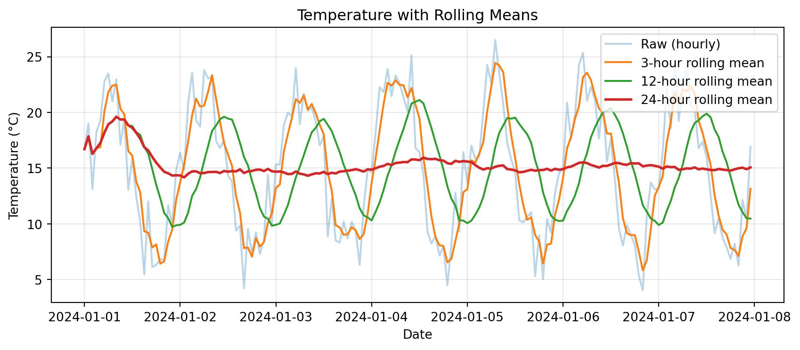
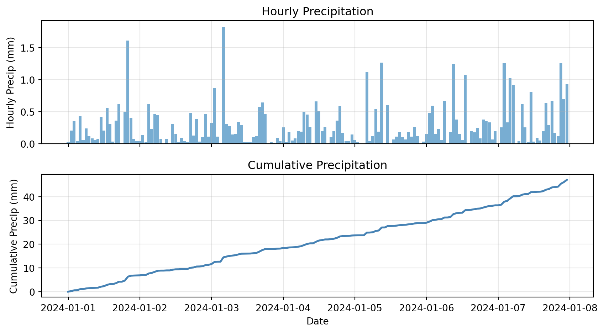
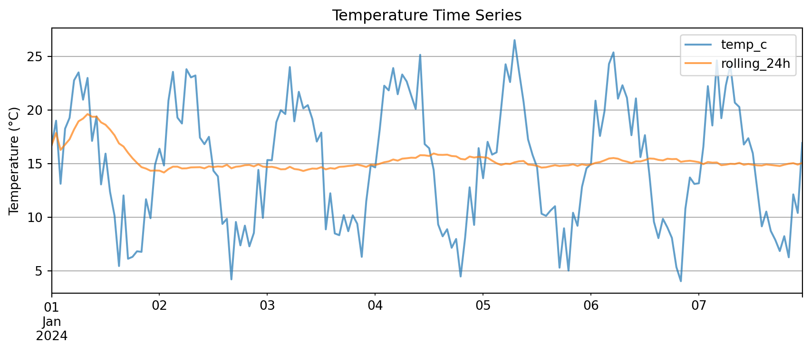
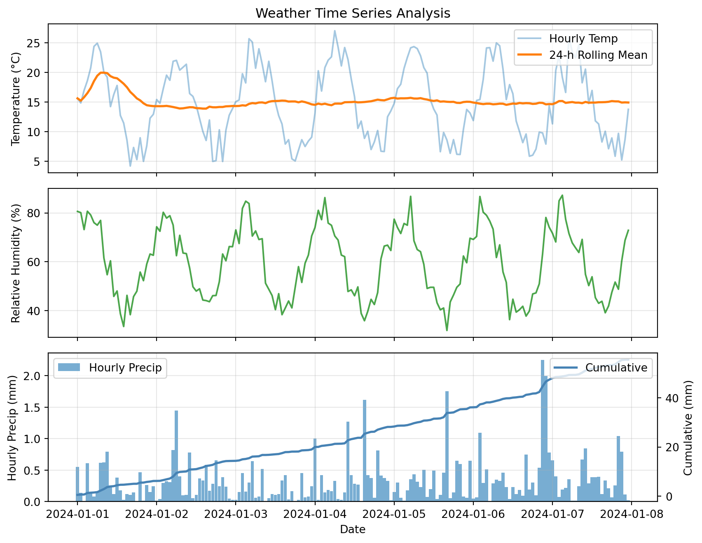

Mon 15.2
Tue 18.7
Wed 22.1
Thu 19.8
dtype: float64ATOC 4815/5815
Tabular Data & Pandas Foundations - Week 4
Will Chapman
CU Boulder ATOC
2026-01-01
Tabular Data & Pandas
Today’s Objectives
- Understanding pandas: from arrays to tables
- Reading and parsing CSV files with dates
- Time series indexing and resampling
- Rolling windows and aggregations
- Creating publication-quality time series plots
Reminders
Due Friday at 9pm:
- Lab 4
- HW4
Office Hours:
Will: Tu / Th 11:15-12:15p
Aiden: M / W 4-5p
Why Pandas?
Pandas Scientific Story
Created by Wes McKinney (late 2000s) to handle panel data for quantitative finance
- Goal: bring R/Excel/SQL-style table tools into Python
Built on top of NumPy, adding:
- Labeled rows/columns (
DataFrame,Series) - Easy handling of missing values
- Powerful time-series tools (date indexes, resampling, rolling windows)
Became the standard tabular data library in scientific Python:
- Most data tutorials start with
import pandas as pd - Common front-end for reading/writing CSV, Excel, SQL, NetCDF/Parquet, etc.
- Feeds directly into NumPy, Matplotlib, and higher-level tools (xarray, geopandas, statsmodels)
For this course, think of pandas as:
“Excel + SQL + NumPy, but in code” — a single place to clean data, compute statistics, and drive time-series visualizations.
From Arrays to Tables
NumPy arrays are great for uniform numeric data:
- Fast math, statistics, simulations
- But… real datasets are often tables!
Real datasets need:
- Multiple columns:
station_id,time,temp_c,wind_kt,pressure_hpa - Different types: strings, floats, ints, timestamps
- Alignment by labels (station name, timestamp), not just position
Lab 4 / Homework 4:
- You’ll load real station data from CSVs
- We need a tool that understands columns + time indices
- Not just raw arrays!
What Pandas Gives Us
Labeled columns:
- Like a spreadsheet in code
- Access by name:
df["temp_c"]
Powerful time handling:
- Date index, resampling, rolling means
- Natural time-based operations
Easy I/O:
read_csv,to_csv,read_excel, etc.- Direct connection to data files
Big Idea: Arrays do the math, tables organize the data. Pandas is our table engine.
Pandas Fundamentals
Series vs. DataFrames
Series:
- 1D labeled array (values + index)
- Think: “one column with names on the side”
- Often used for a single variable: temps, pressures, etc.
DataFrame:
- 2D table of multiple Series sharing the same index
- Columns + metadata (dtypes, index, column names)
- Think: “whole spreadsheet”
Mental Model:
- Series: one labeled column
- DataFrame: whole spreadsheet
In the lab you’ll go back and forth:
- Pulling one column:
df["temp_c"]→ Series - Working with full table:
df→ DataFrame
Reading CSVs with parse_dates
Problem: Raw CSV files store dates/times as strings
Solution: Pandas can convert them to real datetime64 objects on read
Why it matters:
- Easy filtering by date:
df[df['Date and Time'] >= '2024-03-01'] - Time-aware plotting and resampling later
- Statistical operations on time intervals
Let read_csv do the heavy lifting:
parse_dates turns string timestamps into real time objects from the start
Setting a Time Index
As scientists, it makes infinitely more sense to index based on date and time than on integer index
We carry so much more information:
temp_c pressure_hpa
2024-01-01 00:00:00 15.2 1010
2024-01-01 01:00:00 16.1 1011
2024-01-01 02:00:00 17.3 1009
2024-01-01 03:00:00 18.2 1008
2024-01-01 04:00:00 17.5 1010Why use a time index?
- Easier slicing:
df['2024-01-01 02:00':'2024-01-01 04:00'] - Resampling:
df.resample('2h').mean() - Rolling windows:
df['temp_c'].rolling('3h').mean()
Resampling & Aggregation
Resampling Time Series
Resampling: Change the frequency of your time series
Common patterns:
- High-frequency → Low-frequency (downsampling): 5-min → hourly means
- Aggregate with different rules: mean, sum, max, min, etc.
# Create 15-minute data
dates = pd.date_range('2024-01-01', periods=96, freq='15min')
df = pd.DataFrame({
'temp_c': 15 + 5 * np.sin(np.arange(96) * 2 * np.pi / 96) + np.random.randn(96) * 0.5,
'precip_mm': np.random.exponential(0.1, 96)
}, index=dates)
# Resample to hourly
hourly = df.resample('1h').agg({
'temp_c': 'mean', # Average temperature
'precip_mm': 'sum' # Total precipitation
})
print(hourly.head()) temp_c precip_mm
2024-01-01 00:00:00 15.224297 0.382549
2024-01-01 01:00:00 17.192983 0.281701
2024-01-01 02:00:00 18.104593 0.693598
2024-01-01 03:00:00 19.210382 0.378409
2024-01-01 04:00:00 19.418590 0.371246Common resample frequencies:
'1h'→ hourly'1D'→ daily'1W'→ weekly'1MS'→ monthly start
Daily Aggregation
Example: Go from sub-hourly to daily statistics
temp_c precip_mm
mean min max sum
2024-01-01 15.023215 8.792266 20.767465 8.856961
Daily mean temp: 15.0°C
Daily temp range: 12.0°C
Daily precip: 8.86 mmAnomalies & Rolling Windows
Computing Anomalies
Anomaly: Deviation from a baseline (climatology, daily mean, etc.)
Example: Daily temperature anomalies
# Create hourly data for a week
dates = pd.date_range('2024-01-01', periods=168, freq='h')
temps = 15 + 8 * np.sin(np.arange(168) * 2 * np.pi / 24) + np.random.randn(168) * 2
df_temp = pd.DataFrame({'temp_c': temps}, index=dates)
# Compute daily mean
daily_mean = df_temp.resample('1D').mean()
# Calculate anomalies (method 1: using groupby)
df_temp['date'] = df_temp.index.date
df_temp['daily_mean'] = df_temp.groupby('date')['temp_c'].transform('mean')
df_temp['anomaly'] = df_temp['temp_c'] - df_temp['daily_mean']
print(df_temp[['temp_c', 'daily_mean', 'anomaly']].head(10)) temp_c daily_mean anomaly
2024-01-01 00:00:00 16.706548 14.355343 2.351205
2024-01-01 01:00:00 18.995255 14.355343 4.639912
2024-01-01 02:00:00 13.119744 14.355343 -1.235599
2024-01-01 03:00:00 18.252466 14.355343 3.897123
2024-01-01 04:00:00 19.263767 14.355343 4.908424
2024-01-01 05:00:00 22.760393 14.355343 8.405050
2024-01-01 06:00:00 23.495250 14.355343 9.139907
2024-01-01 07:00:00 20.957331 14.355343 6.601989
2024-01-01 08:00:00 22.978647 14.355343 8.623304
2024-01-01 09:00:00 17.113149 14.355343 2.757807Anomalies help identify:
- Unusual warm/cold periods
- Deviations from expected patterns
- Extreme events
Rolling Windows
Rolling window: Compute statistics over a moving time window
Common uses:
- Smoothing noisy data
- Detecting trends
- Computing local statistics
import matplotlib.pyplot as plt
# Rolling means with different windows
df_temp['rolling_3h'] = df_temp['temp_c'].rolling('3h').mean()
df_temp['rolling_12h'] = df_temp['temp_c'].rolling('12h').mean()
df_temp['rolling_24h'] = df_temp['temp_c'].rolling('24h').mean()
# Plot
plt.figure(figsize=(9, 4))
plt.plot(df_temp.index, df_temp['temp_c'], alpha=0.3, label='Raw (hourly)')
plt.plot(df_temp.index, df_temp['rolling_3h'], label='3-hour rolling mean')
plt.plot(df_temp.index, df_temp['rolling_12h'], label='12-hour rolling mean')
plt.plot(df_temp.index, df_temp['rolling_24h'], label='24-hour rolling mean', linewidth=2)
plt.xlabel('Date')
plt.ylabel('Temperature (°C)')
plt.title('Temperature with Rolling Means')
plt.legend()
plt.grid(True, alpha=0.3)
plt.tight_layout()
plt.show()
Rolling Statistics
Beyond rolling mean:
rolling().std()→ changing variabilityrolling().min()/rolling().max()→ extreme valuesrolling().sum()→ cumulative over window
Rolling 12-hour statistics:
temp_c rolling_12h rolling_std_12h
count 168.000000 168.000000 167.000000
mean 14.959981 15.196249 4.578259
std 5.765931 3.489452 1.146860
min 4.042453 9.719087 1.618360
25% 9.783725 11.686283 3.536457
50% 15.137600 15.428710 4.658228
75% 19.900026 18.474852 5.590957
max 26.502224 21.115570 6.600526Use cases:
- High rolling std → variable conditions
- Low rolling std → stable conditions
- Combine mean + std for confidence bands
Cumulative Sums
Cumulative sum: Running total over time
Example: Total accumulated precipitation
# Create precipitation data
dates = pd.date_range('2024-01-01', periods=168, freq='h')
precip = pd.DataFrame({
'precip_mm': np.random.exponential(0.3, 168)
}, index=dates)
precip['cumulative_precip'] = precip['precip_mm'].cumsum()
# Plot
fig, (ax1, ax2) = plt.subplots(2, 1, figsize=(9, 5), sharex=True)
ax1.bar(precip.index, precip['precip_mm'], width=0.04, alpha=0.6)
ax1.set_ylabel('Hourly Precip (mm)')
ax1.set_title('Hourly Precipitation')
ax1.grid(True, alpha=0.3)
ax2.plot(precip.index, precip['cumulative_precip'], linewidth=2, color='steelblue')
ax2.set_xlabel('Date')
ax2.set_ylabel('Cumulative Precip (mm)')
ax2.set_title('Cumulative Precipitation')
ax2.grid(True, alpha=0.3)
plt.tight_layout()
plt.show()
Plotting Time Series
Pandas Native Plotting
For quick plots, Pandas supports native plotting functionality
DataFrame columns plot directly vs the DF index:

Key advantage: .plot() knows to use the index on the x-axis
You need very little matplotlib glue!
Multi-Panel Time Series
Complex example: Multiple variables with different scales
# Create comprehensive dataset
dates = pd.date_range('2024-01-01', periods=168, freq='h')
weather = pd.DataFrame({
'temp_c': 15 + 8 * np.sin(np.arange(168) * 2 * np.pi / 24) + np.random.randn(168) * 2,
'rh_pct': 60 + 20 * np.sin(np.arange(168) * 2 * np.pi / 24 + np.pi/4) + np.random.randn(168) * 5,
'precip_mm': np.random.exponential(0.3, 168)
}, index=dates)
# Add derived quantities
weather['temp_rolling_24h'] = weather['temp_c'].rolling('24h').mean()
weather['cumulative_precip'] = weather['precip_mm'].cumsum()
# Create multi-panel plot
fig, (ax1, ax2, ax3) = plt.subplots(3, 1, figsize=(9, 7), sharex=True)
# Panel 1: Temperature
ax1.plot(weather.index, weather['temp_c'], alpha=0.4, label='Hourly Temp')
ax1.plot(weather.index, weather['temp_rolling_24h'], linewidth=2, label='24-h Rolling Mean')
ax1.set_ylabel('Temperature (°C)')
ax1.set_title('Weather Time Series Analysis')
ax1.legend(loc='best')
ax1.grid(True, alpha=0.3)
# Panel 2: Relative Humidity
ax2.plot(weather.index, weather['rh_pct'], color='green', alpha=0.7)
ax2.set_ylabel('Relative Humidity (%)')
ax2.grid(True, alpha=0.3)
# Panel 3: Precipitation
ax3.bar(weather.index, weather['precip_mm'], width=0.04, alpha=0.6, label='Hourly Precip')
ax3_cum = ax3.twinx()
ax3_cum.plot(weather.index, weather['cumulative_precip'], color='steelblue',
linewidth=2, label='Cumulative')
ax3.set_xlabel('Date')
ax3.set_ylabel('Hourly Precip (mm)')
ax3_cum.set_ylabel('Cumulative (mm)')
ax3.legend(loc='upper left')
ax3_cum.legend(loc='upper right')
ax3.grid(True, alpha=0.3)
plt.tight_layout()
plt.show()
This plot combines:
- Raw and smoothed time series (top)
- Secondary variables (middle)
- Hourly bars + cumulative line with twin y-axes (bottom)
Advanced Topics
Rolling Metrics Summary
Raw time series are noisy and hard to interpret
Rolling metrics show local behavior over a window:
- Rolling mean → smoothed trend
- Rolling std → changing variability
- Rolling min/max → local extremes
Cumulative sums show how a quantity builds up over time:
- Total precipitation
- Energy use
- Accumulated degree-days
Key insight:
Rolling stats tell you what is happening locally, cumulative sums tell you what has built up so far. Together they explain the story better than raw values alone.
We will get into the issues with some of these metrics later in the course.
Threshold-Based Filtering
With a time index, masks work the same as NumPy but now have dates on the side
Example: Find “rainy hours” where hourly precip exceeds 0.5 mm
# Create sample precipitation data
dates = pd.date_range('2024-01-01', periods=168, freq='h')
precip_df = pd.DataFrame({
'precip_mm': np.random.exponential(0.3, 168)
}, index=dates)
# Boolean mask
rainy_hours = precip_df['precip_mm'] > 0.5
# Count and extract
print(f"Number of rainy hours: {rainy_hours.sum()}")
print(f"\nRainiest hours:")
print(precip_df[rainy_hours].nlargest(5, 'precip_mm'))Number of rainy hours: 30
Rainiest hours:
precip_mm
2024-01-01 12:00:00 1.708789
2024-01-03 08:00:00 1.634904
2024-01-06 15:00:00 1.356739
2024-01-01 06:00:00 1.321537
2024-01-04 16:00:00 1.209265Boolean masks let you:
- Count how many times a condition occurs
- Extract those rows for inspection or plotting
- Combine multiple conditions:
(temp > 30) & (rh < 20)for hot and dry
Helper Functions
We keep writing the same pattern:
- Resample a time series
- Compute mean temp and total precip
- Maybe plot or compare different windows
Instead of copy-pasting, wrap it in a helper function:
def summarize_period(df, freq='1D', temp_col='temp_c', precip_col='precip_mm'):
"""
Resample time series to specified frequency.
Parameters
----------
df : pd.DataFrame
Input dataframe with time index
freq : str
Resample frequency ('1h', '1D', '1W', etc.)
temp_col : str
Name of temperature column
precip_col : str
Name of precipitation column
Returns
-------
pd.DataFrame
Resampled data with mean temp and total precip
"""
summary = df.resample(freq).agg({
temp_col: ['mean', 'min', 'max'],
precip_col: 'sum'
})
return summary
# Test the function
daily_summary = summarize_period(weather, freq='1D', temp_col='temp_c', precip_col='precip_mm')
print(daily_summary) temp_c precip_mm
mean min max sum
2024-01-01 14.298228 4.196823 24.909452 6.204678
2024-01-02 14.324422 4.962563 22.017241 8.153072
2024-01-03 14.595658 5.048532 25.665051 4.659718
2024-01-04 15.628809 6.637131 27.006960 9.168673
2024-01-05 15.025250 6.140893 24.336369 7.921276
2024-01-06 14.649105 5.847480 24.958588 11.273186
2024-01-07 14.909084 5.217617 25.976589 8.128068Benefits:
- One place to define “how to summarize a period”
- Call it with different frequencies:
'6h','1D','3h' - Reusable across projects
- Easy to test and debug
Bonus Challenge 💻
Design a ‘heatwave detector’ that flags multi-day warm spells
Task: Create a function find_heatwaves(df, threshold=55, min_duration=48) that returns a list of (start_timestamp, end_timestamp, peak_temp) for every period where the hourly air temperature stays above threshold for at least min_duration consecutive hours.
Hints:
- Create a boolean Series:
df['temp_c'] > threshold - Use
.diff()or.ne()withcumsum()to label contiguous blocks - Aggregate each block to compute duration and peak temperature
- Plot each detected heatwave on top of the main time-series figure
Example approach:
def find_heatwaves(df, threshold=55, min_duration=48):
"""Detect heatwaves in temperature time series."""
# Create boolean mask
is_hot = df['temp_c'] > threshold
# Label contiguous blocks
blocks = (is_hot != is_hot.shift()).cumsum()
# Filter for hot blocks only
hot_blocks = blocks[is_hot]
# Compute duration and peak for each block
heatwaves = []
for block_id in hot_blocks.unique():
block_data = df[blocks == block_id]
duration = len(block_data)
if duration >= min_duration:
start = block_data.index[0]
end = block_data.index[-1]
peak = block_data['temp_c'].max()
heatwaves.append((start, end, peak))
return heatwavesLooking Ahead
Assignment Checklist
Due Friday at 9pm:
- Lab 4
- HW4
HW4 Summary:
- Load CSV data with
parse_dates - Set time index for easy slicing
- Resample to different frequencies
- Compute anomalies from climatology
- Create rolling window statistics
- Plot multi-panel time series
- Write helper functions for reusable analysis
Resources and Support
Available to you:
- Lab notebooks with step-by-step examples
- Office hours (bring your data questions!)
- Discussion channels
- Pandas docs: pandas.pydata.org
Remember: Pandas takes practice. Start with simple operations, build up complexity. The time index is your friend!
Questions?
Contact
Prof. Will Chapman
📧 wchapman@colorado.edu
🌐 willychap.github.io
🏢 ATOC Building, CU Boulder
See you next week!

ATOC 4815/5815 - Week 4